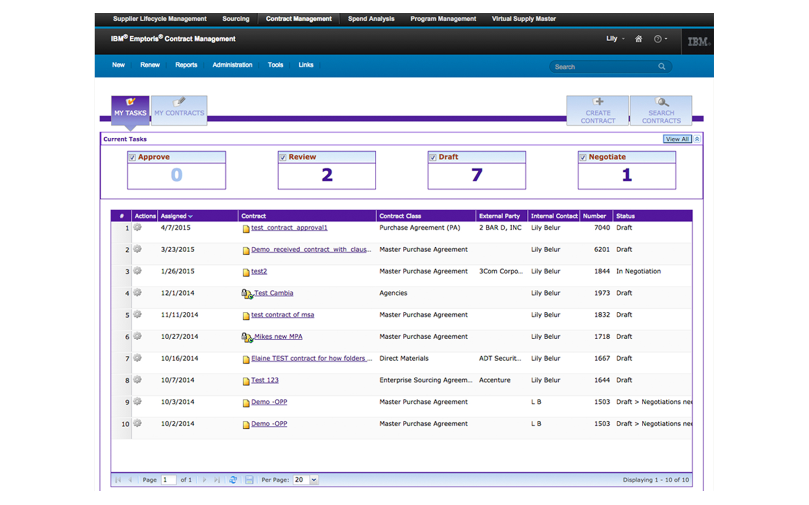
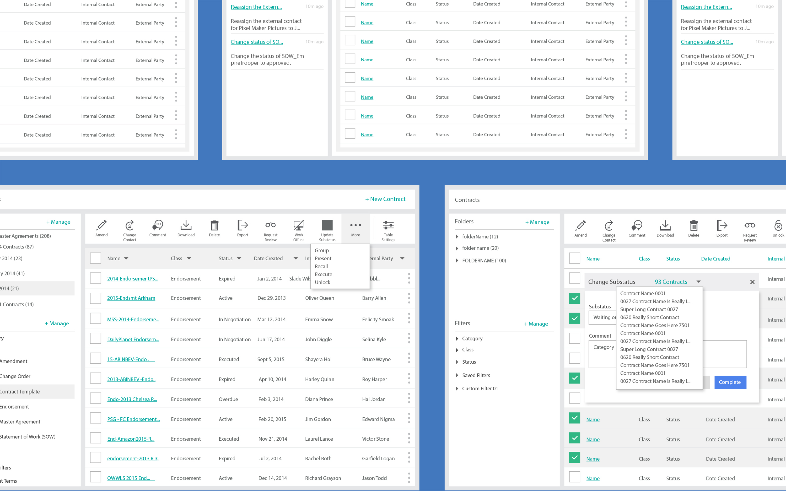
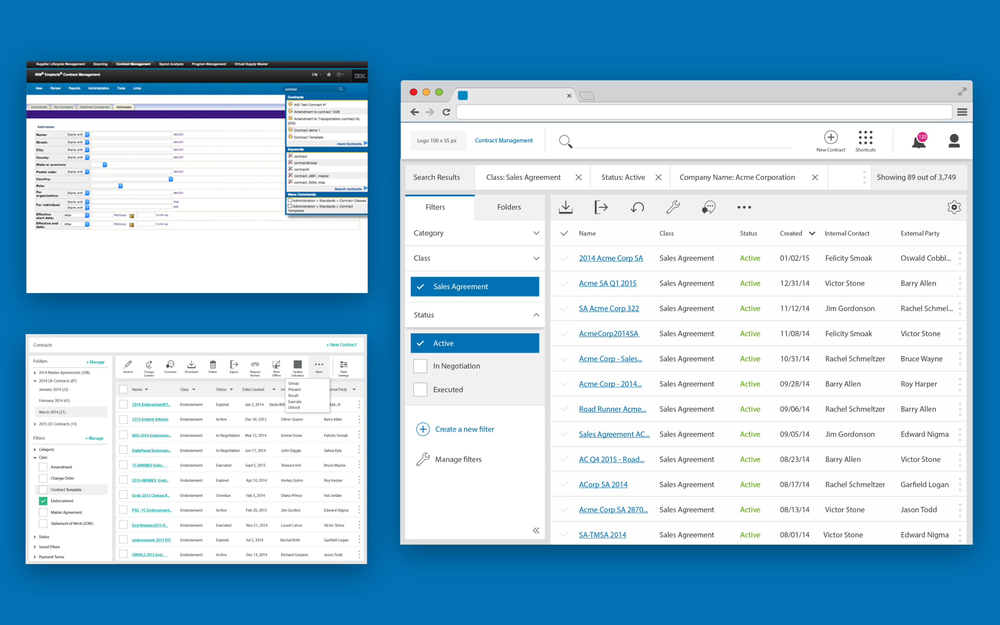
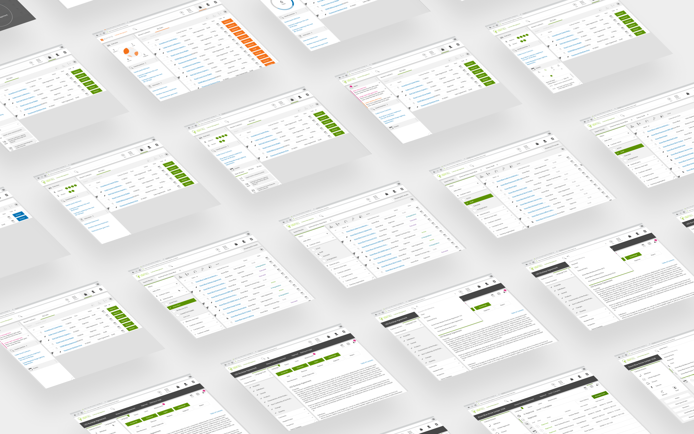
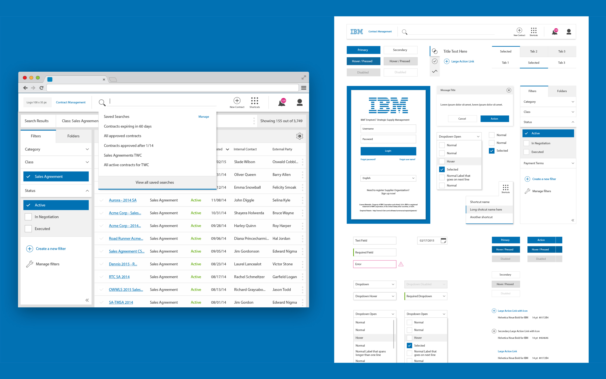
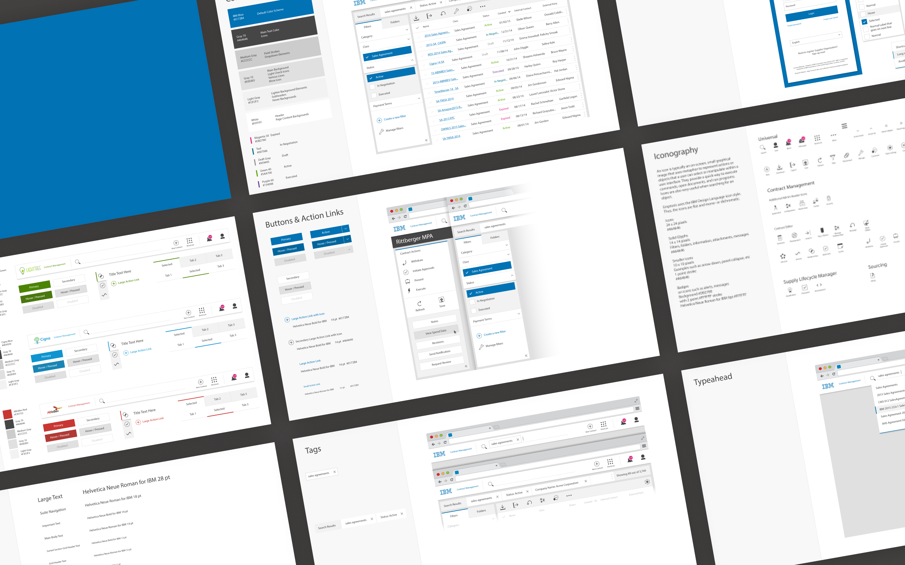

Our main problem was increasing collaboration and reducing manual risks. Contract managers risk millions of dollars if language gets misinterpreted or not completed quickly.
To understand these pains, we reached out to users across 17 different industries that managed contracts. We found the lack of visibility, collaboration, and support from other Emptoris products were the most difficult things to cope with. From there, we set out to locate their contracts and surface their work from the homepage.
In the end, our goal was to deliver a product that focuses on improving the user’s visibility into the contract, improve the time to value, and mitigate risk. And since this was the biggest redesign in 15 years, we felt this was the perfect opportunity to drastically change everything.
We redesigned two components — the search and homepage experiences, for contract managers and administrators.
Today most contract managers are responsible for working across several contracts at a given time and searching for one became too difficult - 52 required filters difficult. For instance, when users initiated a search they were given a basic search input that called for exact results. The problem being users found it successful only 53% of the time.
We wanted to design a better experience that would yield better results upfront. We incorporated a search bar with a drop down that embedded saved searches and recent searches. Once a search was initiated, type-ahead results would show the user is then able click any of those contracts or run a search to filter more contracts. Through testing, we realized that search may not be important to workflow. Users believed that it was the only way to find and know the status of their contracts, but we felt the homepage and a new dashboard could solve those problems.
To most, the homepage provided visibility into the contracts they are responsible for. However, it didn’t provide them any actionable use. Many users have tasks that need to be completed in a given timeframe, but don't have enough information to know what kind of action to take up on that contract.
We set out to help users jump back into their work. With that, we designed an experience that feels fresh and served as an ally to their productivity. One major roadblock we ran into was the number of table columns. Users wanted everything and through user research, we didn’t find any patterns that would help us. To allow for that unpredictable behavior, we provided a fixed table, five dedicated columns, and the ability to change and reorder the columns. User tests and tasks helped us narrow down the set of default columns and the best interactions to support the solution.
To measure the visibility, time to value, and risk, we created a short story with tasks around finding the contract status and searching. We asked our users to, find a recent contract from the homepage, perform a review task, review the clauses, and find another contract and filter by it’s status.
At the end of the test, the average completion rate for the tasks was 78% and rated the new experience; 4 out of 5. The overall feedback was very positive. Our users loved the experience we were building and several wanted to be more involved in our process. On the business side, our renewal rate increased by 72% and several old clients came back.
In the end, we knew that the dashboard wasn’t the best representation but it did encompass all the requirements and requests. For future releases, we wanted to explore more data visualization and a better notification experience.